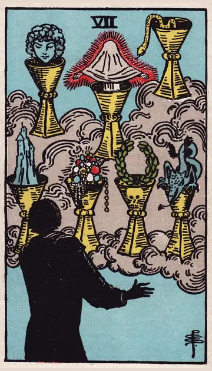

正位置カップの7の正位置
キーワード：夢見る・迷い・選択肢の多さ
恋愛
理想や空想がふくらみ、現実が見えにくい時です。
相手の気持ちあなたへの気持ちと、理想の間で揺れているようです。
この先現実を見つめれば、本当の気持ちがわかりそうです。
アドバイス理想と現実を、分けて考えてみましょう。
気をつけること相手を理想化しすぎないように。
この先現実を見つめれば、本当の気持ちがわかりそうです。
アドバイス理想と現実を、分けて考えてみましょう。
気をつけること相手を理想化しすぎないように。
人間関係
誘いが多く、迷いやすい時です。
相手の気持ちあなたのことを、まだよく知らないと感じているようです。
この先本当に大切な縁が見えてきそうです。
アドバイス本当に大切な人を、見極めましょう。
気をつけること見た目や雰囲気だけで、判断しないように。
この先本当に大切な縁が見えてきそうです。
アドバイス本当に大切な人を、見極めましょう。
気をつけること見た目や雰囲気だけで、判断しないように。
仕事・学業
選択肢が多すぎて、決めきれない時期です。
この先一つに絞れば、道が開けそうです。
アドバイス選択肢を絞り、一つに集中しましょう。
気をつけることうまい話に惑わされないように。
アドバイス選択肢を絞り、一つに集中しましょう。
気をつけることうまい話に惑わされないように。
お金
お金の使い道に、目移りしやすい時です。
この先絞り込めば、満足できる使い方ができそうです。
アドバイス欲しい物に、優先順位をつけましょう。
気をつけることうますぎる話に、乗らないように。
アドバイス欲しい物に、優先順位をつけましょう。
気をつけることうますぎる話に、乗らないように。
生活
理想の暮らしを、あれこれ夢見る時です。
この先一つずつ叶えていけそうです。
アドバイス叶えたいことを、一つに絞りましょう。
気をつけること夢ばかりで、今の暮らしを放っておかないように。
アドバイス叶えたいことを、一つに絞りましょう。
気をつけること夢ばかりで、今の暮らしを放っておかないように。
今日の運勢
あれこれ目移りしやすい日です。
この先迷いが晴れていきそうです。
アドバイスやることを一つ決めて、取りかかりましょう。
気をつけること空想にふけりすぎて、時間を失わないように。
アドバイスやることを一つ決めて、取りかかりましょう。
気をつけること空想にふけりすぎて、時間を失わないように。
逆位置カップの7の逆位置
キーワード：現実を見る・決断・目覚め
恋愛
夢から覚めて、現実を見つめられる時です。
相手の気持ちあなたへの気持ちが、はっきりしてきたようです。
この先本当の気持ちに気づき、関係が進みそうです。
アドバイスはっきりした気持ちに従って、行動しましょう。
気をつけること現実的になりすぎて、夢まで捨てないように。
この先本当の気持ちに気づき、関係が進みそうです。
アドバイスはっきりした気持ちに従って、行動しましょう。
気をつけること現実的になりすぎて、夢まで捨てないように。
人間関係
本当に大切な人が、見えてくる時です。
相手の気持ちあなたとの関係を、現実的に考え始めているようです。
この先信頼できる関係が残りそうです。
アドバイス大切な人との時間を、優先しましょう。
気をつけること人間関係を、切り捨てすぎないように。
この先信頼できる関係が残りそうです。
アドバイス大切な人との時間を、優先しましょう。
気をつけること人間関係を、切り捨てすぎないように。
仕事・学業
迷いを振り切り、決断できる時期です。
この先決断したことが、形になりそうです。
アドバイス決めたことに、集中して取り組みましょう。
気をつけること決めたあとで、迷い直さないように。
アドバイス決めたことに、集中して取り組みましょう。
気をつけること決めたあとで、迷い直さないように。
お金
現実的に、お金と向き合える時です。
この先堅実な使い方ができそうです。
アドバイス必要な物と欲しい物を、分けて考えましょう。
気をつけること切り詰めすぎないように。
アドバイス必要な物と欲しい物を、分けて考えましょう。
気をつけること切り詰めすぎないように。
生活
夢から覚めて、現実的に暮らしを整えられる時です。
この先地に足のついた暮らしになりそうです。
アドバイスできることから、始めましょう。
気をつけること理想を捨てすぎないように。
アドバイスできることから、始めましょう。
気をつけること理想を捨てすぎないように。
今日の運勢
頭がすっきり整理される日です。
この先すっきりした気持ちで過ごせそうです。
アドバイス先延ばしにしていたことを、片づけましょう。
気をつけること完璧な答えを求めすぎないように。
アドバイス先延ばしにしていたことを、片づけましょう。
気をつけること完璧な答えを求めすぎないように。
このページの文章は、アプリ「ひとやすみタロット」の結果に使っている文章です。アプリでは、あなたの相談や、カードが出た位置（今の状況・これからの流れ・アドバイス）に合わせて、この中から文章を選びます。逆位置の読み方は逆位置のことをご覧ください。
「カップの7」が出たら、あなたの相談ではどう読む？
アプリでは、質問への答えに合わせて、カードの言葉をあなたの相談に合わせて届けます。
Android 対応・会員登録なし